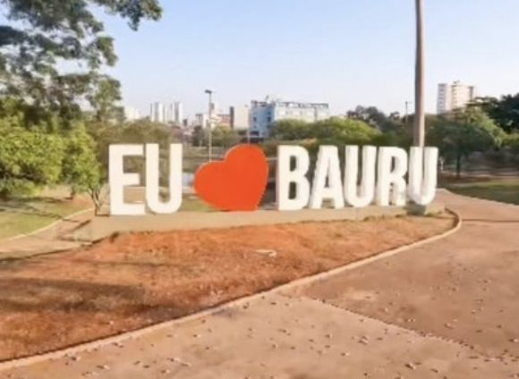

NOME:
Peterson Geraldo
EXERCICIO:Município De Bauru
Bauru é um municipio brasileiro do interior do estado de São Paulo, sendo o
municipio mais
populoso do Centro-Oeste paulista.
Pertence à Mesorregião e Microregião de Bauru, localizando-se
a noroeste da capital do estado,
distanciado desta ceca 326km.Ocupa uma área de 673.488 km², sendo que 68,9769 km²
estão
em perímetro urbano e os 604,51km² estantes constituem a zona rural.
Em 2021, sua população estimada pelo IBGE foi de 381.706 habitantes,
sendo 18º mais
populoso do estado de São Paulo.
Bauru foi fundada em 1896. Sendo que a Marcha para o Oeste,
impulsionada pelo governo de
Gétulio Vargas como incentivo ao progresso e a ocupação da região central do Brasil, foi
um
importante fator de incremento populacional para a região.

No começo do século XX o município comçou a ganhar infraestrutura e a populção
aumentou
com a chegada da frrovia e, mais tarde, das rodovias.
O café ganhou força no município no início do século, porém se desvalorizou e aos poucos
Bauru
se industrializou, sendo que, a indústria foi a principal responsável pela urbanização do
município e hoje é, juntamente com o setor terciário, a principal fonte de renda municipal,
fazendo com que o município tenha o 68º maior PIB brasileiro. No campo ganhou força após
a
década d 1950 a cana-de-açucar.
Várias rodovias ligam Bauru a diversos municipios paulistas, tais como a
Marechal Rondom, a
comandante João Ribeiro de Barros, a Cesário José de Carvalho e a Engenheiro
Batista
Cabral Renno, sendo que o municipio se encontra no meio de um importante entrocamento
aéreo, rodoviário e ferroviário. Além da importância econômica ainda é um importante centro
cultural de sua região. O Jardim Botânico Municipal e o Horto Florestal de Bauru
configuram-se
como grandes áreas de preservação ambiental, enquanto o Teatro Municipal de Bauru "Celina
Lourdes Alves Neves", o Centro Cultural de Bauru e o Automovel Clube de Bauru são
relevantes
pontos de visitação, localizados na zona urbana, além dos projetos e eventos culturais realizados
pela Secretaria Municipal de Cultura, órgão responsável por projetar a vida cultural bauruense.